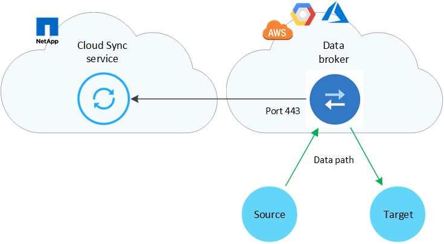
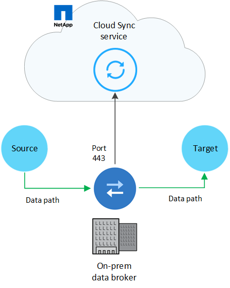

문서 변경 요청
문서 변경 요청 이 페이지 편집
이 페이지 편집 기여하는 방법 자세히 알아보기
기여하는 방법 자세히 알아보기Cloud Sync의 네트워킹 개요
Cloud Sync용 네트워킹에는 데이터 브로커 그룹과 소스 및 대상 위치 간의 연결과 포트 443을 통한 데이터 브로커로부터의 아웃바운드 인터넷 연결이 포함됩니다.
데이터 브로커 위치
데이터 브로커 그룹은 클라우드 또는 사내에 설치되는 하나 이상의 데이터 브로커로 구성됩니다.
클라우드 내 데이터 브로커
다음 이미지는 AWS, Google Cloud 또는 Azure에서 클라우드에서 실행 중인 데이터 브로커를 보여줍니다. 데이터 브로커에 대한 연결이 있는 한 소스와 타겟이 모든 위치에 있을 수 있습니다. 예를 들어, 데이터 센터와 클라우드 공급자에 VPN 연결을 설정할 수 있습니다.

|
Cloud Sync은 AWS, Azure 또는 Google Cloud에 데이터 브로커를 구축할 경우 필요한 아웃바운드 통신을 지원하는 보안 그룹을 생성합니다. |

사내 데이터 브로커
다음 이미지는 사내 데이터 센터에서 실행되는 데이터 브로커를 보여줍니다. 다시 한 번 말씀드리지만, 데이터 브로커에 대한 연결이 있는 한 소스 및 타겟이 모든 위치에 있을 수 있습니다.

네트워킹 요구 사항
-
소스와 타겟이 데이터 브로커 그룹에 네트워크로 연결되어 있어야 합니다.
예를 들어, NFS 서버가 데이터 센터에 있고 데이터 브로커가 AWS에 있는 경우 네트워크에서 VPC로 네트워크 연결(VPN 또는 Direct Connect)이 필요합니다.
-
데이터 브로커는 포트 443을 통해 Cloud Sync 서비스를 폴링할 수 있도록 아웃바운드 인터넷 연결이 필요합니다.
-
소스, 타겟 및 데이터 브로커가 NTP(Network Time Protocol) 서비스를 사용하도록 구성하는 것이 좋습니다. 세 구성 요소 간의 시간 차이는 5분을 초과해서는 안 됩니다.
네트워킹 엔드포인트
NetApp 데이터 브로커는 포트 443을 통한 아웃바운드 인터넷 액세스를 통해 Cloud Sync 서비스와 통신하고 몇 가지 다른 서비스 및 리포지토리에 연락해야 합니다. 로컬 웹 브라우저에서도 특정 작업을 수행하려면 끝점에 액세스해야 합니다. 아웃바운드 연결을 제한해야 하는 경우 아웃바운드 트래픽에 대해 방화벽을 구성할 때 다음 엔드포인트 목록을 참조하십시오.
데이터 브로커 엔드포인트
데이터 브로커가 다음 엔드포인트에 연결합니다.
| 엔드포인트 | 목적 |
|---|---|
https://olcentgbl.trafficmanager.net 으로 문의하십시오 |
데이터 브로커 호스트의 CentOS 패키지를 업데이트하기 위해 리포지토리에 접속하려면 이 엔드포인트는 CentOS 호스트에 데이터 브로커를 수동으로 설치하는 경우에만 연결됩니다. |
https://rpm.nodesource.com https://registry.npmjs.org https://nodejs.org: 를 참조하십시오 |
개발에 사용되는 Node.js, NPM 및 기타 타사 패키지를 업데이트하기 위한 리포지토리에 접촉합니다. |
https://tgz.pm2.io 으로 문의하십시오 |
Cloud Sync를 모니터링하는 데 사용되는 타사 패키지인 PM2를 업데이트하기 위한 리포지토리에 액세스합니다. |
https://sqs.us-east-1.amazonaws.com https://kinesis.us-east-1.amazonaws.com 으로 문의하십시오 |
Cloud Sync에서 운영에 사용하는 AWS 서비스(파일 대기열 처리, 작업 등록, 데이터 브로커에 업데이트 제공)에 연락하려면 |
https://s3.region.amazonaws.com 예: s3.us-east-2.amazonaws.com:443https://docs.aws.amazon.com/general/latest/gr/rande.html#s3_region["S3 엔드포인트 목록은 AWS 설명서를 참조하십시오"^] |
동기화 관계에 S3 버킷이 포함된 경우 Amazon S3에 연락하려면 |
https://s3.us-east-1.amazonaws.com 으로 문의하십시오 |
Cloud Sync에서 데이터 브로커 로그를 다운로드하면 데이터 브로커가 로그 디렉토리를 지퍼하고 로그를 us-east-1 지역의 미리 정의된 S3 버킷으로 업로드합니다. |
https://cf.cloudsync.netapp.com https://repo.cloudsync.netapp.com 으로 문의하십시오 |
Cloud Sync 서비스에 문의하십시오. |
https://support.netapp.com 으로 문의하십시오 |
BYOL 라이센스를 사용하여 동기화 관계에 대한 NetApp 지원 팀에 문의 |
https://fedoraproject.org 으로 문의하십시오 |
설치 및 업데이트 중에 데이터 브로커 가상 머신에 7z를 설치하려면 다음을 수행합니다. 7z는 NetApp 기술 지원 팀에 AutoSupport 메시지 전송 기능이 필요합니다. |
https://sts.amazonaws.com 으로 문의하십시오 |
데이터 브로커가 AWS에 구축되거나 사내 구축 시에 AWS 자격 증명이 제공되고 AWS 자격 증명이 제공됩니다. 데이터 브로커가 배포, 업데이트 및 재시작 중에 이 엔드포인트에 연결합니다. |
https://cloudmanager.cloud.netapp.com https://netapp-cloud-account.auth0.com 으로 문의하십시오 |
데이터 센스를 사용하여 새 동기화 관계를 위한 소스 파일을 선택할 때 클라우드 데이터 센스에 문의하려면 |
웹 브라우저 끝점
문제 해결을 위해 로그를 다운로드하려면 웹 브라우저에서 다음 끝점에 액세스해야 합니다.
logs.cloudsync.netapp.com:443